Manual
Career is the fourteen lessons, in order. Flight is the same pad with no mission. Sandbox is for throwing planets, and it keeps no score. On the mission board, tap a lesson, then its button. How this works opens the long page for that lesson. How to play opens the short page.
Contents
- Controls
- Settings
- Fly. Watch the rocket. Then you fly it.
- Classroom. See the orbit. Then you pick it.
- Voyage. Watch both burns. Then you do them.
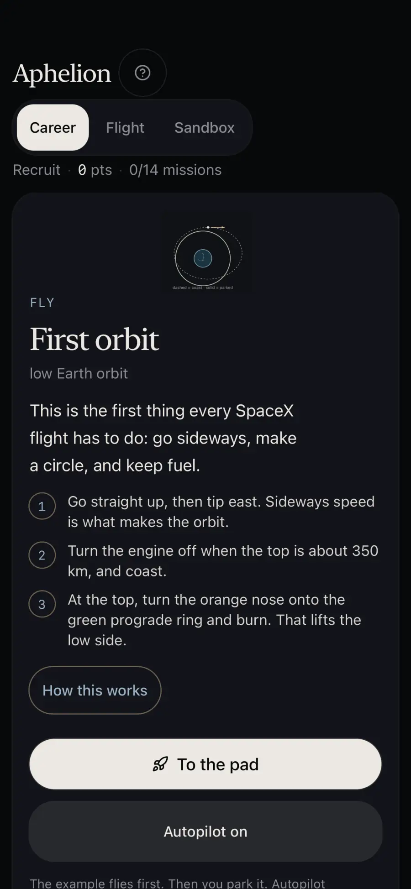
Controls
iPhone, iPad, and Mac show the same buttons. On the Mac the app is the iPad app. A keyboard and a trackpad work there too.
On the screen
Ignite lights the engines. While they are lit the same button says Cut. East and West tip the nose. Follow the green mark when the lesson says prograde: that is the way you are already going. Deploy lets a satellite go. Stage separates. During the example the assist button says Example. On your turn it says Autopilot or Autopilot on. Autopilot on says: “Autopilot has the stick. It will park near 250 × 350 km and save the ship tank.” Autopilot off says: “Autopilot off. You have the stick.” You still get the points if Autopilot flies.
The time buttons are 1×, 4×, 16×, 32×, and 64×. 1× is the speed you watch and learn at. The higher ones are fast-forward. They only change how fast the picture moves. The rocket still flies by the same rules.
Ship, Booster, Pad, and Orbit jump to that view. Sats appears once the satellites are out. On a lesson that is not a rocket flight, the camera button reads Close up, or Orbit when the view is already close. A pinch, a mouse wheel, or a trackpad scroll up and down looks closer or wider, on a flight and on every other lesson. Two fingers slide the picture, and a sideways trackpad scroll does too. Tap the camera button to put the shot back. None of that changes the orbit. Pause stops the picture.
Close, Path, and North change how much of a long ellipse you see. Reset to pad starts the current flight again. Finished lessons and points stay, in one record on the device, aphelion-career-v1.
My turn leaves the example and starts your try. Watch, Coach, and By hand are the other lesson buttons. Retry starts that try again. Hold to burn is the voyage button. While you hold it, the label says Burning.
Keyboard
Space pauses. In a flight, A or the left arrow steers one way and D or the right arrow the other. The game flips that pair from the camera, so a positive steer tips the nose toward the left of the screen. The buttons labeled East and West are the ones that name a compass direction. W, Z, or the up arrow sets the throttle to full. Shift raises it gradually. S, X, the down arrow, or Control lowers it. Q turns prograde on or off, E radial, R retrograde. J stages, and does nothing during the example. N deploys. L launches. Plus and minus, or the numpad, change the time. On a lesson that clock stays between 1× and 64×. F toggles follow. T toggles trails.
Settings
Settings is in the menu. The lead on that page is: “The rocket flies the same path. Only the numbers you read change, and the choice stays on this device.” Units are stored on the device as aphelion-units-v1. Language is stored as aphelion-lang-v1. Changing the language does not reset the flight.
Units
Metric is the default, and it is the one the lessons are written in. Its card says: “Kilometres, metres per second, tonnes, tonne-force, and kilopascals. The lessons are written in these.” SpaceX webcast says: “Kilometres and kilometres per hour, the pair on the SpaceX vehicle tracker. Tonnes and tonne-force, the Starship page. Pressure stays in kilopascals, because that tracker does not show it.” US customary says: “Miles, or feet under one mile. Miles per hour. US tons, or pounds under one ton. Pounds of force, and psi.” The disclosure “The exact factors” lists the conversions the game uses. One foot is 0.3048 m. One mile is 1.609344 km. One pound is 0.45359237 kg. One US ton is 2,000 pounds. One pound of force is 4.4482216152605 N. One psi is 6894.757293168361 Pa. One tonne-force is 2,204.6226218487757 pounds of force. Speed in km/h is km/s times 3,600. Miles per hour are metres per second times 2.2369362920544025.
Language
Automatic says: “Follow the language of this device.” English says: “English, the words the lessons were written in.” Nederlands says: “Nederlands.” With Nederlands on, a decimal point in a number on the screen becomes a comma. Thousands stay grouped with a space.
The pictures below are the iPhone 17e Simulator with Nederlands selected, so the words on those screens are Dutch. The English names of the same controls are Metric, SpaceX webcast, US customary, Automatic, English, and Nederlands.
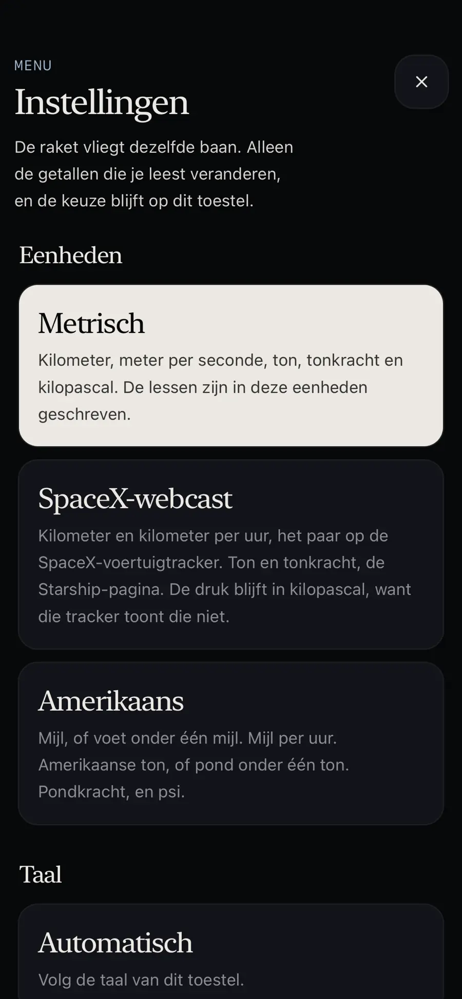
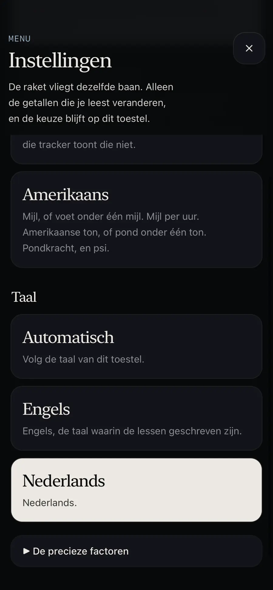
First orbit
Goal
Park near 250 × 350 km. A little error is fine. Leave fuel in the ship — that tank is for the rest of the flight.
How the game marks it done
The ship is off the ground, above 150 km, on a closed path. Perigee is at least 220 km. Apogee is under 700 km. The gap between them is under 120 km. At least 0.8 km/s is still in the ship, and the throttle is under 0.2. A tighter cut is named Precise when the gap is under 90 km, perigee is from 220 to 450 km, apogee is at most 520 km, and at least 2 km/s is left. The points come when you finish, not when the example does.
How to fly it
- Tap First orbit, then To the pad. The ship waits on the pad: ALT 0.1 km, V 0. The line says: “Press Watch or Example to start.” The example button reads “Start the example” until the example is actually flying. Then it reads “Example”. TWR is 0.00 while the throttle is 0%. Watch starts it too.
- Press My turn. The card says: “Your turn. Park near 250 × 350 km and leave fuel in the ship. Pitch east, or Autopilot.”
- Go straight up, then tip east. Sideways speed is what makes the orbit. The flight strip reads “1 Burn up”, “2 Cut & coast”, and “3 Burn at the top”.
- Turn the engine off when the top is about 350 km, and coast. The game shows CUT NOW when that moment is here.
- At the top, turn the orange nose onto the green prograde ring and burn. That lifts the low side. The game shows IGNITE NOW for that burn.
For a kid
Go straight up through the thick air, then tip the nose east. Follow the green prograde mark, the way you are already going. When the high end is near 350 km, cut the engine and coast. At the top, point the nose forward and burn. That burn does not lift you higher. It lifts the low end, up to about 250 km, so the bottom stays above the air. Leave fuel in the ship. A little error is fine. Autopilot will fly this, and the points still count.
For a teacher
A Starship leaves the pad upright, then bends toward the east. The thick air is only the first minute. Where that air pushes hardest, Max Q, the engines ease off, then push again as it thins. After that, sideways speed is the whole job.
Tips
- “Impact. The stack hit Earth — reset the pad.”
- “Orbit, but too high: … The top must stay under 700 km. Retry and cut on CUT NOW.”
- “Orbit, but the bottom is low: … It must reach 220 km. Burn again on IGNITE NOW, or Retry.”
- “Orbit, but too stretched: … Top and bottom must be within 120 km. Retry and cut on CUT NOW.”
- “In orbit, but only … km/s left. First orbit needs 0.8 km/s still in the ship.” Cut earlier, or use Autopilot.
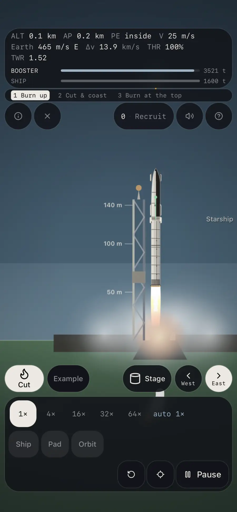
Deploy
Goal
The same parking orbit, then release the satellite. Arrive with fuel still in the ship.
How the game marks it done
A released satellite whose name starts with “Sat ” is on a closed path, and its perigee is above 100 km. While the bay is open the status is: “The bay is open. Starlinks leave one by one. sped up ×10”. When one is up, the status is “Satellite on station.”
How to fly it
- Tap Deploy, then To the pad. Same wait as First orbit: ALT 0.1 km, V 0, and “Press Watch or Example to start.” “Start the example” or Watch starts the climb. Once the orbit is round, the bay opens and the satellites leave.
- Press My turn. The card says: “Your turn. Same orbit, then Deploy. Keep fuel in the ship.”
- Park in the same circle, with fuel still in the ship.
- Tap Deploy. The bay opens and the Starlinks leave one by one. Before the orbit is ready the card says “Your turn. Reach orbit, then Deploy.” In orbit it says “Your turn. Tap Deploy.”
- Each drifts away very slowly. Over the next orbits they spread into a line.
For a kid
Park the same circle as First orbit, with fuel still in the ship. Cut the engine. Tap Deploy once. The bay opens and the Starlinks leave one by one. Each drifts away very slowly. Over the next orbits they spread into a line.
For a teacher
On Starship the bay door opens about 20 to 35 minutes after liftoff, and a rack pushes the flat satellites out one by one, about once a minute. On Falcon 9 the whole stack is let go at once while the stage turns slowly.
Tips
- “Sat Pe still in the air — circularize, then deploy.”
- “The satellite went out below orbit. It falls back.”
- “Only … km/s left — the ship can't reach orbit to deploy.”
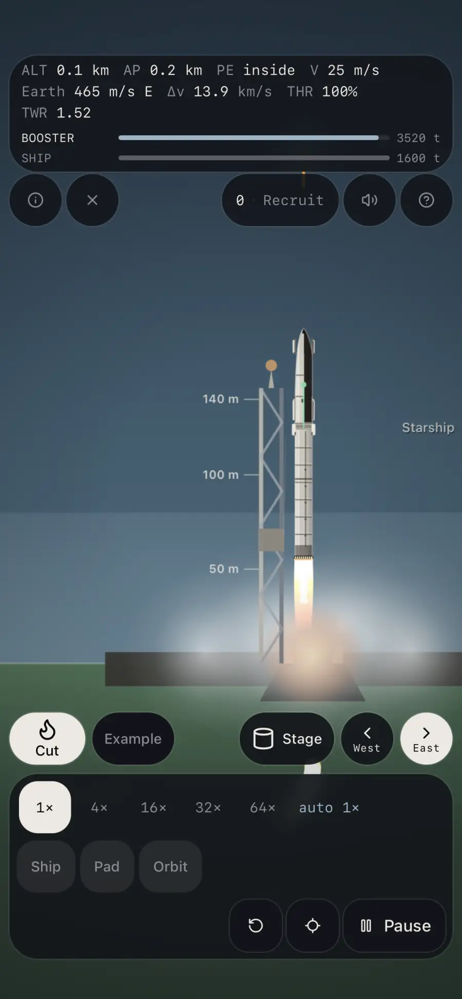
Belly flop
Goal
From the air the ship comes home sideways. The belly makes the drag and the heat. Near the ground the engines flip the tail down, and the tower catches it. No legs.
How the game marks it done
The ship is home. The status then says: “Caught. … The arms have the ship. No legs on this one.”
How to fly it
- Tap Belly flop, then Come home. The ship is already in the air, about 78 km up at 6.93 km/s, and it waits there. The line says: “Press Watch or Example to start.” Watch or “Start the example” starts the fall. SHIP 70.0 t is propellant still in the tanks, not the dry mass. The screen says that. TWR is 0.00 while the engines are off.
- Press My turn. The card says: “Your turn. The ship is already in the air. Autopilot flies the belly and the flip. Watch the catch.”
- The ship meets the air sideways. The belly, not the nose, takes the heat.
- Flaps hold that belly to the wind. Engines stay off while the air does the slowing.
- Low down, the engines light and flip the tail under it. The tower arms catch the ship. Use 4× while it is high, and 1× for the flip.
For a kid
You watch. The ship meets the air sideways. Flaps hold the belly into the wind. The engines stay off while the air does the slowing. Low down they light, flip the tail under the ship, and the tower arms close. There are no legs. The Moon and Mars ships in these lessons use legs, because there is no tower on the Moon or on Mars.
For a teacher
Starship comes in belly-first, tipped so the wind hits the tiles. The forward and aft flaps move against each other to hold that angle. The hot air wraps the windward side.
Tips
- The example keeps saying the engines stay off while the ship is still sideways. The flip waits until the air has done its work.
- Watch the catch at 1×. The card on the board says: “Watch the belly, the flip, and the catch. 4× until it is low, then 1× for the flip.”
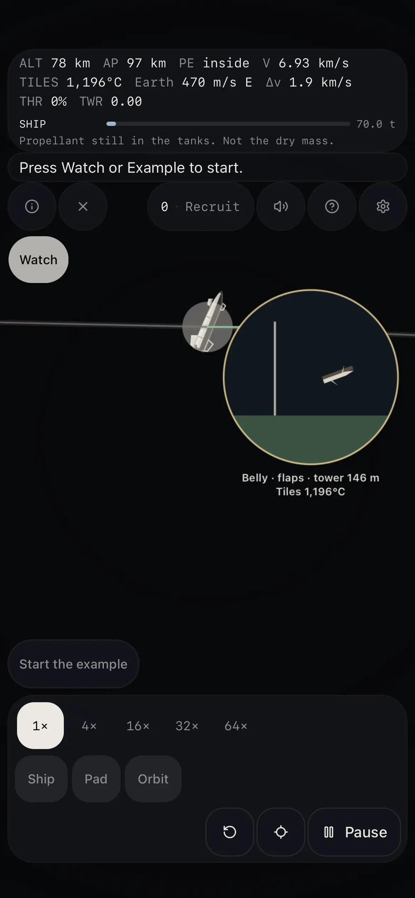
Tilt to the station
Goal
408 km up, tipped to 51.6°, the same plane as the space station. Launch on that heading and you arrive with fuel to spare. Tilting a 26° orbit up to it spends almost everything.
How the game marks it done
On your turn, after the picture has flown, on the question, with the button labeled “ISS 51.6°”. That button is still the LEO orbit. The done line is “LEO. The station lives here.” A wrong pick says “That's ” plus that orbit’s name, a colon, its short line, and “Try again.”
How to fly it
- Tap Tilt to the station, then Tilt to the station. The example launches on the good heading. The flame points along that heading.
- Press My turn. The card says: “Press Watch, Coach, or By hand. Then you fly it.”
- By hand starts on a compass at 90°. Turn it. The line says about 41° on the ground is about 44° in space. “Launch on this heading” flies that aim. A bad aim still flies, and the picture names the wrong tilt and what it would cost to fix.
- “The costly way” launches due east, near 26°, then two sideways burns half a lap apart. Half a lap is about 46 minutes. Fast-forward is only on the coast. Each burn is at 1×. The line shows Δv = 2 v sin(Δi/2).
- When the picture finishes, the line says “You flew it. Press Question.” On the question, tap ISS 51.6°.
For a kid
Watch, then try. A launch on that heading arrives with fuel left. The costly way starts due east, near 26°, then two sideways burns. You arrive with 0.76 km/s left. You need 0.80 km/s to come home. Real crews launch into the station’s plane. A plane change works, and it costs almost all the fuel.
For a teacher
The station flies about 408 km up, tipped 51.64° to the equator. NASA. On the ground at Starbase the compass reads about 41°. In space that heading is about 44° east of north. The pure plane change from the 26° parking orbit is about 3.42 km/s, so 0.76 km/s is what is left of the 4.178 km/s the ship had. Watch pays 14 points and Coach pays 35, and only after the picture has flown. By hand, then the question, pays the 70. Tapping Watch before anything moves pays nothing. Finishing the question on Watch logs the lesson at 14. Flying By hand before that question can still make up the rest.
Tips
- The question waits until the flight is on screen. Open the mission card on the phone if Question is folded away.
- The word “turn here” still sits on the equator label. The compass and the burn name are the aim.
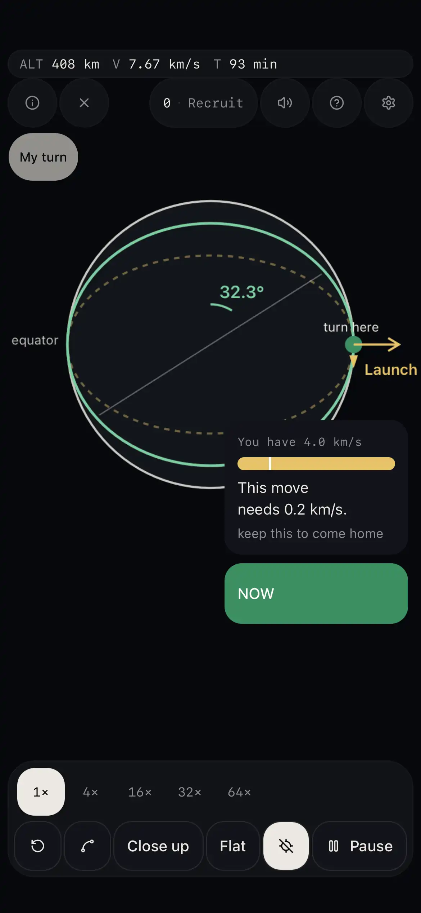
Polar
Goal
817 km up, about 101 minutes a lap, straight over the north pole and then the south. The line stays put while Earth turns, so the next pass is a new place.
How the game marks it done
Polar is selected, the path has crossed a pole line at least four times, and the Earth’s spin has passed 0.7 radians. If Polar is not selected the status is “Select Polar in the orbit row.” The example says: “Straight over both poles. The next pass is a new place. Press My turn when you want the question.”
How to fly it
- Tap Polar, then Watch the poles.
- Press My turn. The card says: “Your turn. Which orbit crosses both poles? Pick it.”
- Tap Polar in the orbit row. The path goes over the north pole, then the south pole.
- Your line stays still. You do not chase the ground. Earth turns underneath, so the next lap sees a new place.
For a kid
Watch the example. The line stays put. EAST slides around the rim because the Earth is turning, not because the satellite is chasing the ground. Then it is your turn. Tap Polar. A later change of tilt is a sideways burn, and it is cheapest when you are moving slowly. The cheap choice is to launch into the plane you want.
For a teacher
Weather satellites and ice satellites use polar or near-polar paths for that strip-by-strip look. The tilt is picked on the way up, by the direction of the launch. A polar flight leaves south from a west-coast pad. A flight to a station leaves northeast from Florida, near 51.6°.
Tips
- The craft in this lesson is named MetOp. The long page also says MetOp really flies 98.7°, sun-synchronous, so it keeps the same morning light.
- A wrong pick names the orbit you tapped. Polar’s short line is “straight over both poles”.
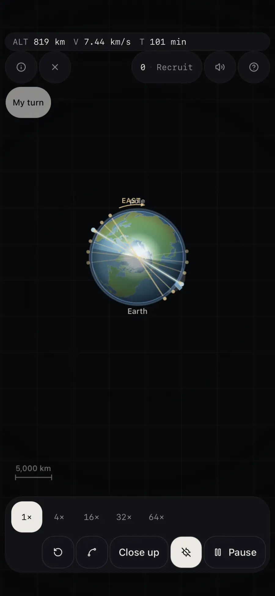
Dawn-dusk
Goal
786 km up, about 100 minutes a lap, tipped to 98.6°. Earth's bulge walks that plane with the Sun, about one degree a day. Dawn-dusk means every pass sees the same morning or evening light.
How the game marks it done
Sun-sync is selected, the path has crossed a pole line at least four times, and the Earth’s spin has passed 0.7 radians. If it is not selected the status is “Select Sun-sync in the orbit row.” The example holds one line: “Just short of the pole, where day meets night. Press My turn when you want the question.”
How to fly it
- Tap Dawn-dusk, then Watch dawn-dusk. The example launches near 98.5°, a little past the pole, slightly retrograde. The line says “Launch at 98.5°. Slightly retrograde.”
- Press My turn. The card says: “Press Watch, Coach, or By hand. Then you fly it.”
- By hand starts near 90°. Turn left and Turn right move it by 2°. The aim the picture asks for is about 98.5°. The mission card still rounds the same idea to 98.6°.
- After the launch, the picture runs about 14 days. On the good tilt the line says the plane stays on the day-night line. A wrong tilt says the plane has walked off the Sun. Fast-forward applies on those days, then the burn stays at 1×.
- When you have flown it, press Question and tap Sun-sync. The lesson still finishes when that path has crossed a pole line four times and the Earth has turned. One real day is still a button on this orbit.
For a kid
Set the tilt a little past the pole. Earth’s bulge, not the engine, keeps that plane with the Sun. The wrong tilt drifts off the day-night line. Then tap Sun-sync.
For a teacher
The inclination is the sun-synchronous value at 786 km from the J2 condition already in the game. The picture prints it as 98.5°. Watch pays 14 of the 70 points and Coach pays 35, after the picture has flown. By hand and the question pay the 70.
Tips
- The craft is named Sentinel-2. Sun-sync’s short line, if you pick it by mistake on another question, is “the same light on every pass”.
- The gold line “Earth’s bulge turns your orbit” is drawn across the ring. The sentence at the top is the same lesson.
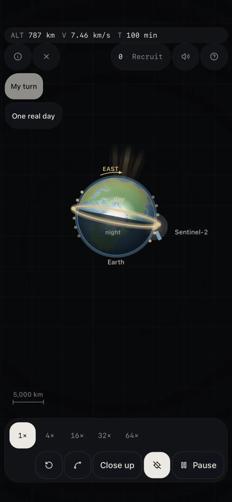
Hangs still
Goal
35 786 km up, on the equator. One lap takes 23 h 56 min, the same time Earth takes to turn, so it hangs over one spot. The gold line is that spot. Tilt the plane and it nods north and south.
How the game marks it done
GEO is selected, the height stays between 33 000 and 39 000 km, and the angle between the satellite and the Earth’s spin stays under 0.35 radians, for 8 seconds. The done line is: “Parked. It hangs on the gold line. One lap matches one turn of the Earth.” The example says: “It hangs on the gold line. The ground turns, the satellite stays. Press My turn when you want the question.”
How to fly it
- Tap Hangs still, then Ride GEO.
- Press My turn. The card says: “Your turn. Which orbit hangs over one spot? Pick it.”
- Tap GEO. 35 786 km up. One lap takes one day: 23 hours and 56 minutes.
- On the equator it hangs over one spot. Pinch in. The ground keeps turning. Tip the path and it nods north and south instead.
For a kid
Watch the gold line. Pinch in on the Earth. The satellite stays on the line while the continents slide under it. Then tap GEO. The wide view hides the turning, because the Earth is a speck. The close view is where you see it.
For a teacher
Television, some radio, and weather satellites that stare at one continent live here. A weather satellite such as Meteosat watches a whole disc of Earth without sweeping along a strip.
Tips
- While it is settling the line is “Settling onto the ring.” While the 8 seconds run it is “Hanging on the gold line.”
- The craft is named Relay. GEO’s short line is “hangs over one spot on the equator”.
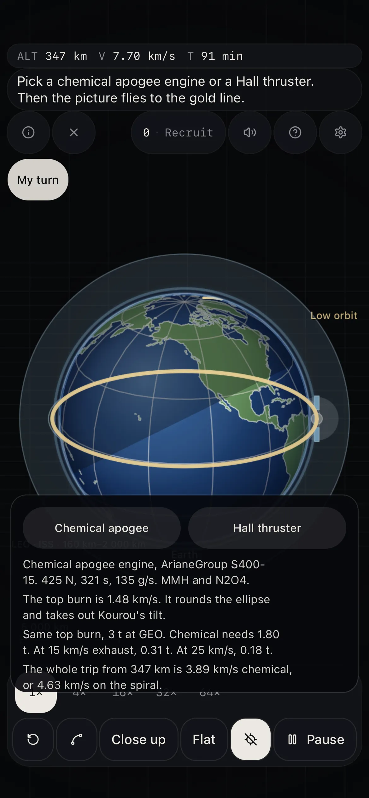
The long ellipse
Goal
Starts as a low circle, about 250 km up. A forward burn there raises only the top, out to 35 786 km. Coast that ellipse. At the slow top, a forward burn raises the bottom until it is a circle on the GEO ring.
How the game marks it done
The path has been under 2 400 km and above 35 600 km, and the craft is now above 35 740 km. If the transfer film is still playing, its beat has to be the circle. A paused example does not finish. The card waits on Watch, Bottom burn, Watch path, or Top burn.
How to fly it
- Tap The long ellipse, then Ride the ellipse. The picture stops before the low circle, before each burn, and before the coast. Choose a time, then press the button: Watch, Bottom burn, Watch path, or Top burn.
- Press My turn. The card says: “Your turn. Hold the bottom burn, then the top burn. The coast flies itself.”
- Start in a low circle. Burn forward at the bottom. Only the high end rises. The button for that burn is Hold to burn.
- Coast the long ellipse. No burn in the middle. Close, Path, and North change the view.
- At the high end, burn forward again. The low end rises, and it becomes a circle. The lesson is finished only on the circle.
For a kid
The picture stops before the low circle, before each burn, and before the coast. Choose a time, then press the small button. The line stays until you move on. Then you fly the burns yourself. The lesson is finished only on the circle.
For a teacher
Rockets from Florida and from Kourou drop satellites onto this ellipse. Kourou is near the equator, so the plane is only tipped about 5°3'. That tip is taken out at the top, where you are slow and a sideways push is cheap.
Tips
- On a burn the card adds “Hold to burn.” At the bottom the coach says a forward burn raises the top. At the top it says the nose forward raises the bottom.
- GTO’s short line, on a wrong pick, is “a long, stretched ellipse”. The craft is named Transfer.
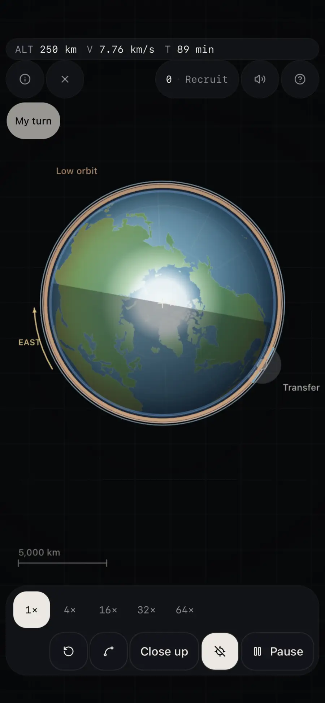
Linger up high
Goal
Starts low, about 500 km. A forward burn throws the top to about 39 900 km, tilted 63.4°, so that high end sits over the far north. You are slow there, so you linger. The ellipse stays. A working satellite does not round it off.
How the game marks it done
The path has been under 2 500 km and above 36 000 km, and the craft has stayed above 32 000 km for 4 seconds. The done line is: “The ellipse stays. You lingered over the north.” There is no burn at the top. A paused example does not finish on the cue alone.
How to fly it
- Tap Linger up high, then Ride the linger. First you see two rings. The high one stays. The low one falls. The line says: “About 1 to 2 years at 415 km if nobody reboosts it. NASA. Higher up, the air is thinner, so it lasts longer. The low ring falling on this clock is a picture. Its exact days are UNPROVEN.”
- Press “Then the ellipse”. The picture stops before the low circle, before the bottom burn, and before the coast. Choose 1×, 4×, 16×, 32×, or 64×, then press Watch, Bottom burn, or Watch path.
- Press My turn. The card says: “Your turn. Hold the bottom burn. Linger over the north. There is no burn at the top.”
- Hold to burn at the bottom. The top climbs a long way up. Coast. Up high you are slow. Close, Path, and North change how much of the ellipse you see.
For a kid
Higher lasts longer. The drawn fall is a picture, and the game says its exact days are unproven. Then fly the ellipse. The lesson is finished when you have lingered over the north. The ellipse stays, about 500 × 39 900 km. A working satellite does not round it off.
For a teacher
NASA’s station FAQ of 29 September 2023 says that at about 415 km the station lasts roughly one to two years if nobody reboosts it. The page is the ISS transition FAQ. The game does not invent a kilometres-per-day decay rate. A working Molniya satellite stays on the ellipse, because the linger is the whole point. Two of them, timed apart, can keep a radio path open over the north for most of a day.
Tips
- While you are up high and not done yet, the line is “Up high. … s — slow over the north. The ellipse stays.”
- The last pause button is still labeled Top burn. The card says to skip that burn. The craft is named Molniya. Its short line is “lingers high over the north”.
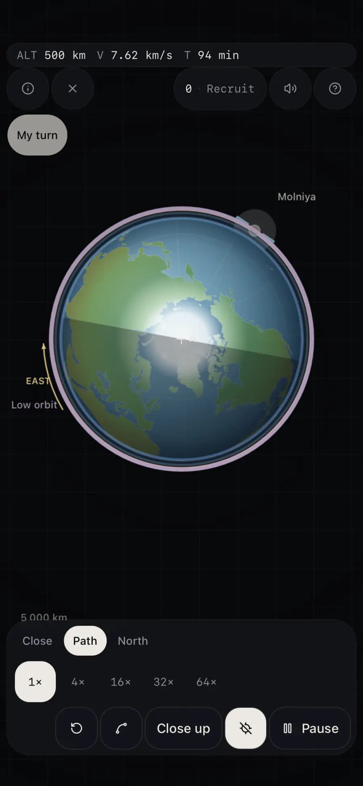
To the Moon
Goal
Forward at Earth raises the far end to the Moon. Coast. Forward at the Moon raises the near end until you share the Moon's path around Earth. Orbiting the Moon itself is a different burn: backward, at the closest pass.
How the game marks it done
The voyage is done when its beats are finished. The steps on screen are “1 · Earth, forward”, “Coast”, and “2 · Moon, forward”. The lesson text says it is done only when both burns are finished. This lesson stops on the path that travels with the Moon. The backward burn that orbits the Moon is the next one, and this lesson does not require it.
How to fly it
- Tap To the Moon, then Leave Earth. The picture stops before each burn and before the coast. Choose a time, then press Earth burn, Watch coast, or Moon burn.
- Press My turn. The card says: “Your turn. Hold to burn at each burn. The coast flies itself.”
- Point forward at Earth. The far end rises out to the Moon. Hold to burn.
- Coast for about five days. The Moon comes to meet that far end. The coast button is Watch coast. On your turn a coast can also wait.
- Point forward again. You travel with the Moon. The button is Moon burn.
For a kid
The picture stops before each burn and before the coast, with the line that says what comes next. Choose a time, then press the small button. Press My turn when you want to fly the burns yourself. The coast does not burn. In this picture that coast is about five days. The lesson is done only when both burns are finished.
For a teacher
Apollo and Artemis light a long burn in low Earth orbit and then coast for about three days. Small corrections tidy the path. At the Moon a backward burn drops the ship into orbit around the Moon. Only after that does a lander go down. This picture is the slower coast, out to the far end, about five days. Apollo meets the Moon sooner.
Tips
- While a burn is waiting, the status ends with “Hold to burn.”
- The example coast runs at least at 16×. The time chips still work. A burn stays on the clock you picked.
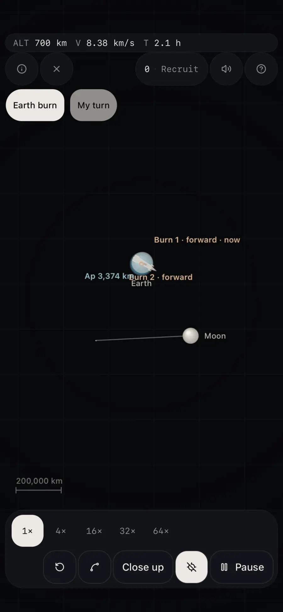
Burn home
Goal
You are traveling with the Moon. Slowing down is the way home. Backward at the Moon drops the near end onto Earth. Coast for about five days. Backward at Earth drops the far end, and you stay on an oval.
How the game marks it done
The voyage is done when its beats are finished. The steps are “1 · Slow at the Moon”, “Coast · about 5 days”, and “2 · Slow at Earth”. The lesson ends when the second burn has dropped the far end.
How to fly it
- Tap Burn home, then Return. Choose a time, then press Slow at Moon, Watch coast, or Slow at Earth.
- Press My turn. The card says: “Your turn. Slowing down is the way home. Hold the backward burn at the Moon, then at Earth.”
- Point backward. Slowing down drops the near end toward Earth. Hold to burn.
- Coast home for about five days. Engines off. The path is already aimed.
- Point backward at Earth. The far end drops. You finish on an oval, not a circle.
For a kid
The picture stops with a line before each backward burn and before the coast home. Earth, the Moon, and the path stay in one view, so you can see the near end fall. Choose 1× when you want it slow. The coast is the long part, about five days in the lesson clock. Press My turn when you want to hold the burns yourself. The lesson ends when the second burn has dropped the far end.
For a teacher
Apollo lit the engine once, behind the ship at the Moon, and fell toward Earth for about three days. The air did the last of the slowing: a hot entry, then parachutes. There was no second burn at Earth, because the plan was to land, not to stay in orbit.
Tips
- Pointing the nose at Earth and thrusting does not drop you onto it. Thrust along your path is what changes the far end. The lesson says slowing down is the way home.
- In this lesson there is no air-catch, so you fly that second backward burn yourself and remain on an oval.
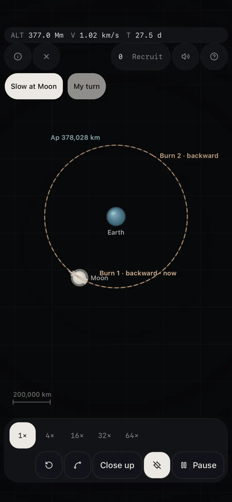
To Mars
Goal
Same two burns, Sun in the middle. Forward at Earth raises the far end to Mars. Months of coast. Forward at Mars raises the near end until you travel with Mars.
How the game marks it done
After the burn at Mars the picture continues. The game marks the voyage done on a flyby past Mars, or when the entry has landed. The steps before that are “1 · Leave Earth”, “Coast · months”, and “2 · Arrive at Mars”. The lesson text says it is done when the burn at Mars has raised the near end.
How to fly it
- Tap To Mars, then Leave for Mars. Choose a time, then press Leave Earth, Watch coast, or Arrive at Mars.
- Press My turn. The card says: “Your turn. Hold forward at Earth, then at Mars. The months of coast fly themselves.”
- Point forward at Earth. Only the far end rises, out to where Mars will be. Hold to burn.
- Coast for months. Engines off. The path was set when you left.
- Point forward at Mars. The near end rises, and you travel with Mars. A later arrival burn is labeled Burn backward. A hard entry offers Try again. A deorbit pause offers Deorbit.
For a kid
The picture stops with a line before each burn and before the months of coast. The Sun, Earth, and Mars stay in one view, so you can see the far end rise. Choose 1× when you want it slow. The coast is the long part. Press My turn when you want to hold the burns yourself. The lesson is done when the burn at Mars has raised the near end.
For a teacher
Earth and Mars line up for this path only about every 26 months. Leave on the wrong day and the far end does not meet Mars. The coast is most of a year. A few small correction burns keep the aim.
Tips
- A burn in the middle of the coast does not aim the meeting. The path was set when you left Earth.
- On a waiting burn the status ends with “Hold to burn.” The coast line says to choose a time, then watch the path.
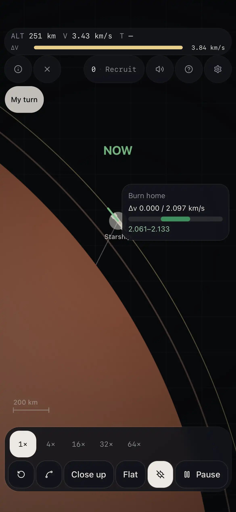
Home from Mars
Goal
Backward at Mars drops the near end onto Earth. Coast. Backward at Earth drops the far end. You then share Earth's year. A capture into low orbit would be one more backward burn, or a dip into the air.
How the game marks it done
The voyage is done when its beats are finished. The steps are “1 · Slow at Mars”, “Coast · months”, and “2 · Slow at Earth”. When it is done the status adds “Earth is here.” The lesson ends when the second burn has dropped the far end.
How to fly it
- Tap Home from Mars, then Come home. Come home on this card is this lesson, not Belly flop.
- Press My turn. The card says: “Your turn. Slowing down is the way home. Hold the backward burn at Mars, then at Earth.”
- Press Slow at Mars and hold Hold to burn. Slowing down drops the near end toward Earth.
- Coast home for months. The button on the coast is Watch coast. Engines off. The path is already aimed.
- Press Slow at Earth and hold the backward burn. You share Earth's year around the Sun.
For a kid
The picture stops with a line before each backward burn and before the months of coast. The Sun, Mars, and Earth stay in one view, so you can see the near end fall. Choose 1× when you want it slow. The coast is the long part. Press My turn when you want to hold the burns yourself. The lesson ends when the second burn has dropped the far end.
For a teacher
A crew leaves Mars on that same ellipse, coasts for months, and meets Earth at the near end going faster than Earth. One more slowing, almost always by the air, finishes the trip. The window matters again: Mars and Earth have to be in the right places, or the near end misses.
Tips
- This lesson ends when you share the year. A low orbit around Earth would be one more backward burn, or a dip into the air.
- The points are awarded once, on your turn, when the lesson is really finished. Doing it again does not add points.
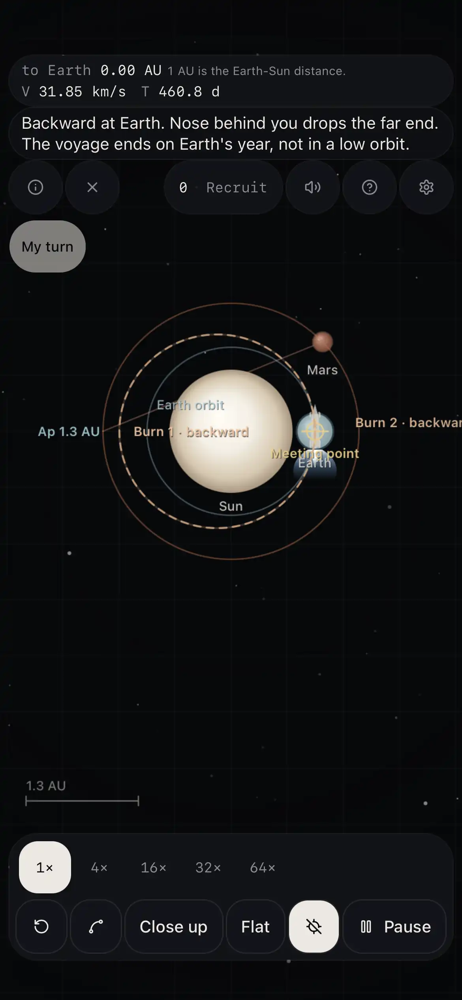